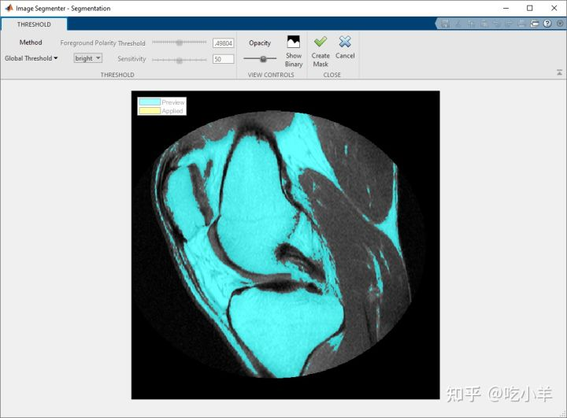
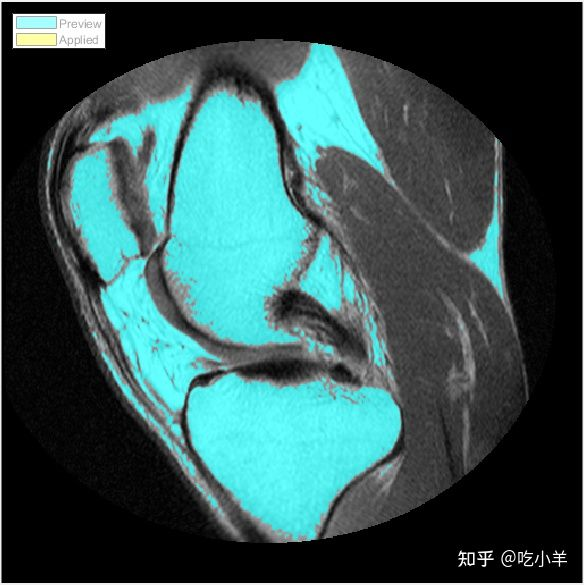

Home
本示例显示如何使用阈值在Image Segmenter应用程序中分割图像。Image Segmenter的应用支持三种不同类型的阈值：全局，手动和适应性。
Image Segmenter应用程序支持多种不同的分割方法；使用该应用程序可以是一个迭代过程。可以尝试多种不同的方法，直到达到想要的结果。
将图像加载到图像分割器中
打开Image Segmenter应用程序并加载要分割的图像。该应用程序可以打开任何可由imread读取的图像。
对于本示例，首先将图像读入工作区。此示例使用膝盖的 MRI 图像。目标是创建一个蒙版图像，从图像中的软组织中分割骨骼。
I = dicomread('knee1');
knee = mat2gray(I);
从 MATLAB® 工具条中，打开Image Segmenter应用程序。在应用程序选项卡上的图像处理和计算机视觉部分，单击Image Segmenter图标
在应用程序工具条上，单击加载，然后选择从工作区加载图像。在从工作区导入对话框中，选择您读入工作区的图像。Image Segmenter会显示您所选择的图像。

还可以使用imageSegmenter命令在Image Segmenter应用程序中打开图像：
imageSegmenter(knee);
加载图像后，您可以选择加载现有的二进制蒙版。例如，您之前可能已经在Color Thresholder应用程序中创建了 RGB 图像的蒙版，并且想要优化分割。要加载现有蒙版，请单击加载蒙版。分割蒙版图像必须是与您要分割的图像大小相同的逻辑图像。
使用阈值分割图像
单击Image Segmenter应用程序工具条的 Create Mask 部分中的Threshold。该应用程序在阈值选项卡中显示阈值图像。默认情况下，应用程序使用全局阈值。

还可以选择手动或自适应阈值。每个阈值选项都支持可用于微调阈值的控件。例如，对于手动阈值，您可以使用滑块选择阈值。通过自适应阈值，您可以使用滑块选择灵敏度。尝试每个选项以查看哪种阈值方法执行最佳分割。
下图显示了使用手动阈值的结果。

膝部图像在前景和背景之间没有明确定义的像素强度差异，并且阈值处理似乎不是分割该图像的最佳选择。
要保存分段，请单击创建蒙版。如果您想在Image Segmenter应用程序中尝试另一种分割方法，请单击取消返回主分割应用程序窗口。
======================================================================
我的测试结果及程序
下面是我测试的代码：

注：本文根据MATLAB官网内容修改而成。